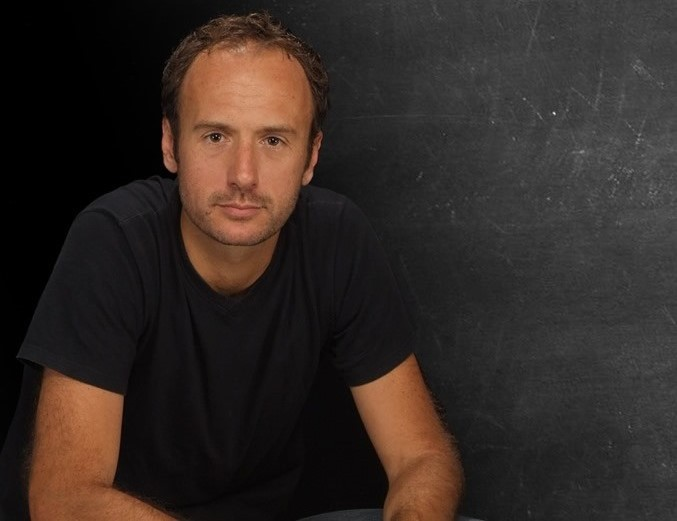
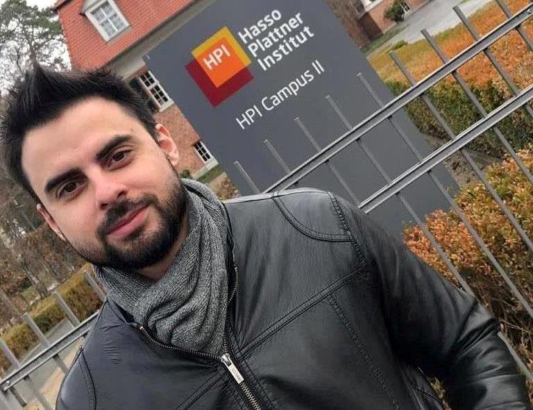
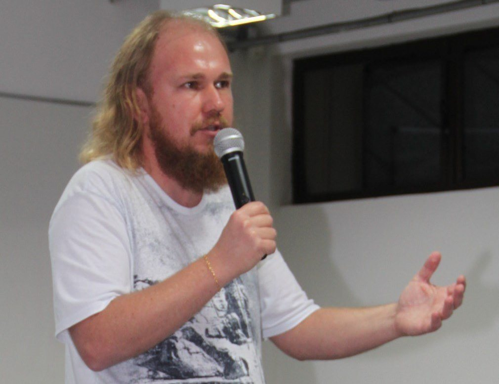

Encontro de Iniciação Científica do Câmpus Toledo é um evento promovido pela Diretoria de Pesquisa e Pós-graduação da Universidade Tecnológica Federal do Paraná – UTFPR, Câmpus Toledo. A sua sétima edição ocorrerá no dia 28 de agosto de 2019.
O objetivo do evento é promover um espaço para a socialização dos resultados de pesquisas de alunos de graduação e pós-graduação além de oportunizar a publicação de seus trabalhos promovendo um ambiente fértil para o debate de estudos realizados, ou em andamento, por pesquisadores de diversas áreas. Como resultado do evento, os trabalhos apresentados comporão o Anais do VII ENDICT, publicado em meio eletrônico (ISSN: 2526-9364).
Fique ligado na programação